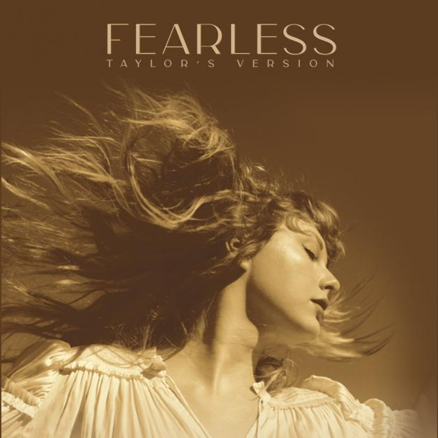

-
The More Lover Chapter

- Artist Name : Taylor Swift
- Year of Release : 2023
- Record Label Origin : Republic Records
The More Lover Chapter is a streaming-exclusive compilation EP by Taylor Swift, released on March 17, 2023, through Republic Records. It consists of select songs from Lover and the previously-unreleased track "All of the Girls You Loved Before". The following is a list of the songs on the album and also the album price:
- Cruel Summer
- Lover
- The Man
- The Archer
- All Of The Girls You Loved Before
Album Price: Rp. 300.000,-
-
Midnights

- Artist Name : Taylor Swift
- Year of Release : 2022
- Record Label Origin : Republic Records
Midnights is the tenth studio album by American singer-songwriter Taylor Swift, released on October 21, 2022, through Republic Records. Announced at the 2022 MTV Video Music Awards, the album marks Swift's first body of new work since her ninth studio album, evermore. Swift wrote and produced Midnights with Jack Antonoff and described the album as a "journey through terrors and sweet dreams" that describes thirteen sleepless nights of her life. The following is a list of the songs on the album and also the album price:
- Lavender Haze
- Maroon
- Anti-Hero
- Snow On The Beach
- You are On Your Own, Kid
- Midnight Rain
- Question...?
- Vigilante Shit
- Bejeweled
- Labyrinth
Album Price: Rp. 285.000,-
-
Fearless (Taylor's Version)

- Artist Name : Taylor Swift
- Year of Release : 2021
- Record Label Origin : Republic Records
The More Lover Chapter is a streaming-exclusive compilation EP by Taylor Swift, released on March 17, 2023, through Republic Records. It consists of select songs from Lover and the previously-unreleased track "All of the Girls You Loved Before". The following is a list of the songs on the album and also the album price:
- Fearless (Taylor's Version)
- Fifteen (Taylor's Version)
- Love Story (Taylor's Version)
- Hey Stephen (Taylor's Version)
- White Horse (Taylor's Version)
- You Belong with Me (Taylor's Version)
Album Price: Rp. 250.000,-